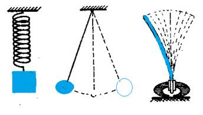

Salınım Hareketi

Salınım, merkezi bir değere (çoğunlukla bir denge noktasına) ilişkin veya iki veya daha fazla farklı durum arasındaki bazı ölçümlerin genellikle zamanla tekrarlayan veya periyodik değişimidir. Sarkaç ve alternatif akım bilinen salınım örnekleridir. Salınımlar fizikte atomlar arasındakiler gibi karmaşık etkileşimlere yaklaşmak için kullanılabilir.Titreşim terimi de bazen sınırlı olarak mekanik salınımları tarif etmekte kullanılsa da bazen salınım ile eş anlamda kullanılır.
Hooke Yasası
F=-kx
Newton'un ikinci yasası kullanılarak difransiyel denklem türetilebilir :
ẍ = -kx/m = -ω2x
Burada ω = √(k/m) açısal frekanstır. Salınım hareketi için genel çözüm :
x(t) = A cos(ωt + φ)